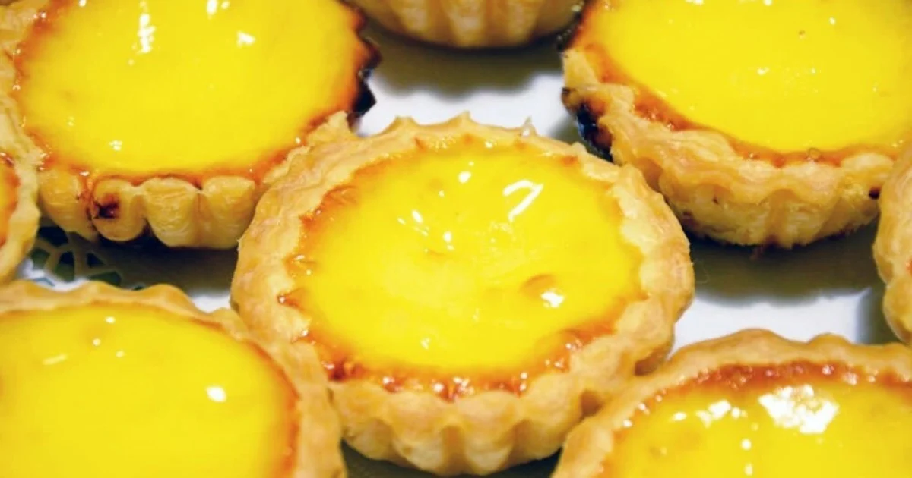

EGG TARTS

One of the most scrumptious and satisfying dessert tart.
Buttery Crust and Eggy Goodness.
Best when freshly baked out of the oven.
Ingredients:
Tart Pastry
- All-purpose flour (200g)
- Powder sugar (75g)
- Unsalted butter (140g)
- Egg (1/2ea)
Egg Custard
- Egg (2ea)
- Sugar (50g)
- Water (150mL)
- Milk (50mL)
How to make:
- Boil water and add sugar and milk.
- Mix well and set aside to cool to room temperature.
- Mix flour and sugar in a separate bowl.
- Knead the soft butter into the bowl.
- Add the beaten egg and knead into a dough.
- Place dough onto cling film and flatten it.
- Place flatten dough into fridge for around 30min.
- Mix the cooled milk mixture with the beaten eggs and seive it.
- Take the cold dough out of the fridge and roll until 6mm thickness.
- Use a circle cookie cutter to cut out the dough.
- Place the cut-out dough on a tart mold and gently shape the dough.
- Place in the fridge for 15min or until dough is hardened.
- Pour in custard mixture to 80% full.
- Preheat oven to 180C(355F) and bake for 20-25 min.
- Use a toothpick to check if custard is cooked properly.
- Let it cool and enjoy!